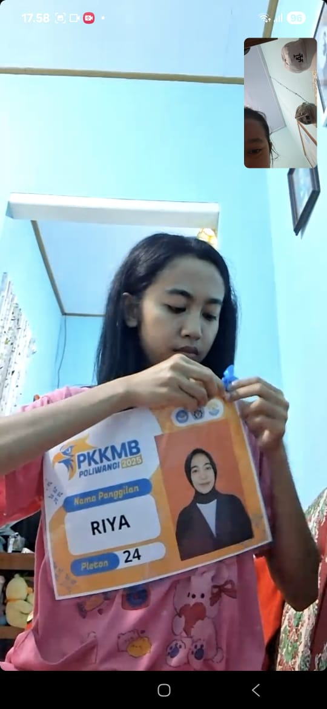

Kenali lebih dekat orang di balik Riya Shop

Nur Fitriyah
Mahasiswi Agribisnis
Politeknik Negeri Banyuwangi
Riya Shop adalah platform jual beli produk pertanian segar yang menghubungkan petani lokal Banyuwangi langsung dengan konsumen. Dirintis sebagai mini project studi Agribisnis, Riya Shop hadir dengan semangat untuk memangkas rantai distribusi yang panjang sehingga harga lebih terjangkau dan petani mendapat nilai jual yang lebih layak.
Setiap produk yang kami jual dipilih dengan teliti — dipanen segar, dikemas higienis, dan dikirim cepat agar kualitasnya sampai di tangan Anda dalam kondisi terbaik. Kami percaya bahwa produk pertanian lokal berkualitas tinggi layak dijangkau oleh semua orang.
Setiap transaksi di Riya Shop berarti langsung mendukung kesejahteraan petani Indonesia, khususnya di wilayah Banyuwangi.
Kami hanya bermitra dengan petani yang menerapkan praktik pertanian aman, mengutamakan kesehatan konsumen dan lingkungan.
Tanpa perantara berlebih, harga lebih hemat untuk pembeli dan keuntungan lebih besar bagi petani.
Kami berkomitmen mengantarkan produk segar ke pintu rumah Anda, ke mana pun Anda berada.